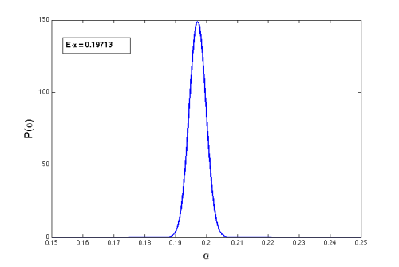

The power in the law of culturomic fame
Magazines like Forbes regularly publish a list of the rich. What would it take to publish a similar list of the famous ? To draw the list we would need to rank the famous and thus need a measure of fame. Two researchers now claim to have to invented a measure of what they call culturomic fame.
In short, instead of using citations (which reflects the influence of a scientist on their peer group) Bohanon and Veres query the Google n-gram database for the appearance of an author’s name. This, presumably, reflects the influence of the scientist on larger society. The arbitrarily chosen unit of fame is the number of times Charles Darwin’s name appears in the database starting from the year he was 30 till the year 2000 and, unsurprisingly, is called the Darwin. A scientist with f Darwin of (so-called) culturomic fame has f times the citation of Darwin. Computing f for scientists listed on Wikipedia results in this Hall of Fame.
Perhaps the most interesting statistical feature in the distribution is that fame distribution is highly skewed. This has been noted by Steven Pinker who suspects that fame is power-law distributed. Is fame, like wealth, then Pareto-distributed ?

To get to the bottom of this, I downloaded this data and studied the empirical distribution. It appeared reasonable to assume a power-law form and so I take it as given that fame follows a Pareto distribution. (In Bayesian terms, the prior on the Pareto distribution is 1, and I only do parameter estimation, not model selection). The minimum value of fame in the dataset is fmin = 0.020009526 milliDarwin and I used this as the cutoff in the Pareto distribution. I used a Jeffreys prior for the exponent and then calculated its Bayesian posterior distribution. The exponent is gamma distributed and its mean is an optimum point estimate. I estimated the exponent to be 0.19713. This means that fame is distributed as P(f) ~ 1/f^(1 + 0.19713). Since the Pareto exponent is less than 1, the expected value of fame is infinite.
So, while one cannot expect to become arbitrarily rich (resources are bounded) it appears that one may expect to become arbitrarily famous! Who said that the rich were like the famous ?